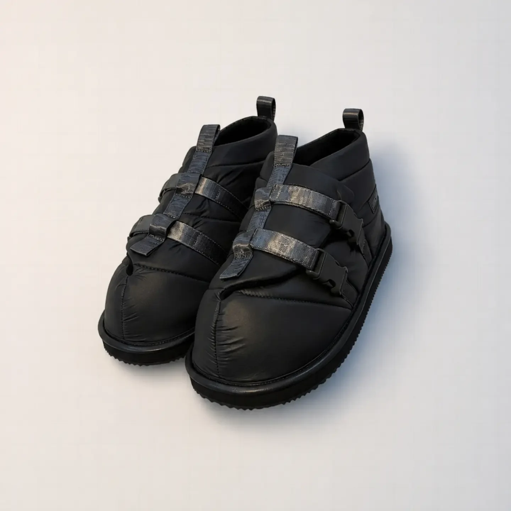
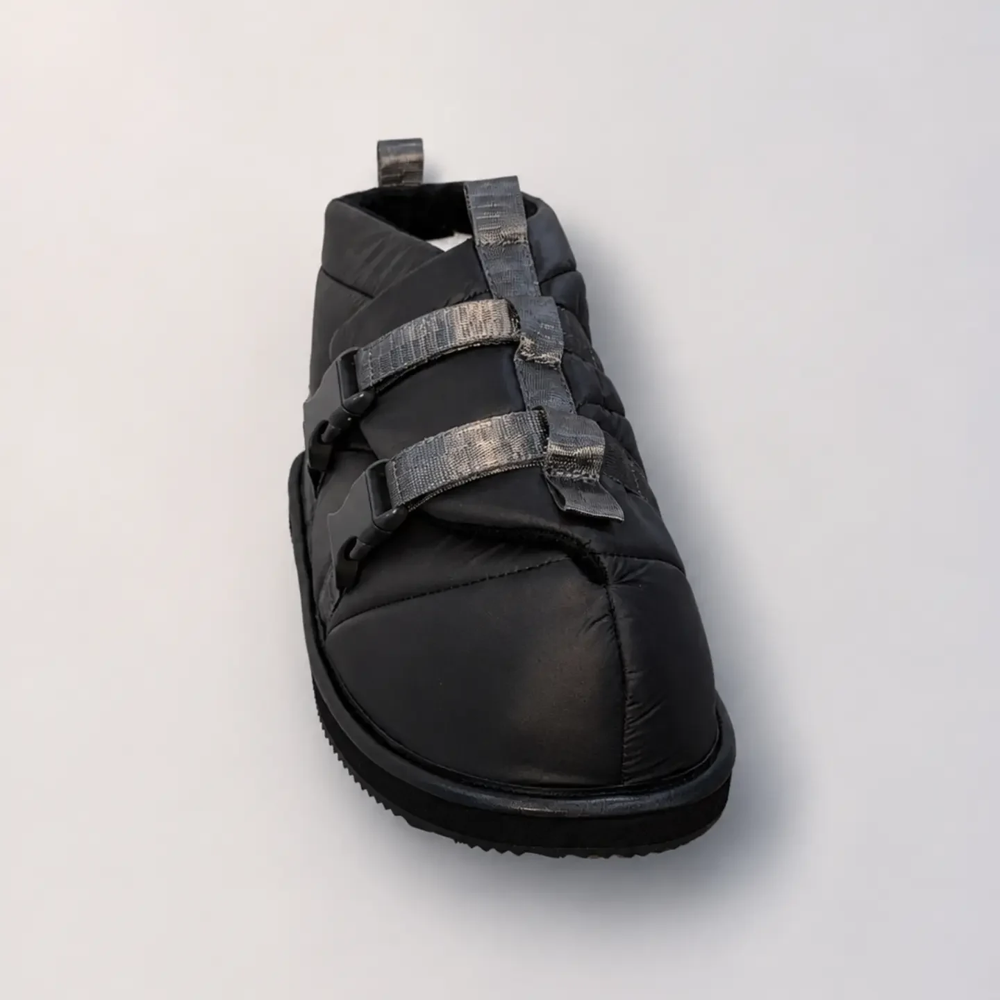
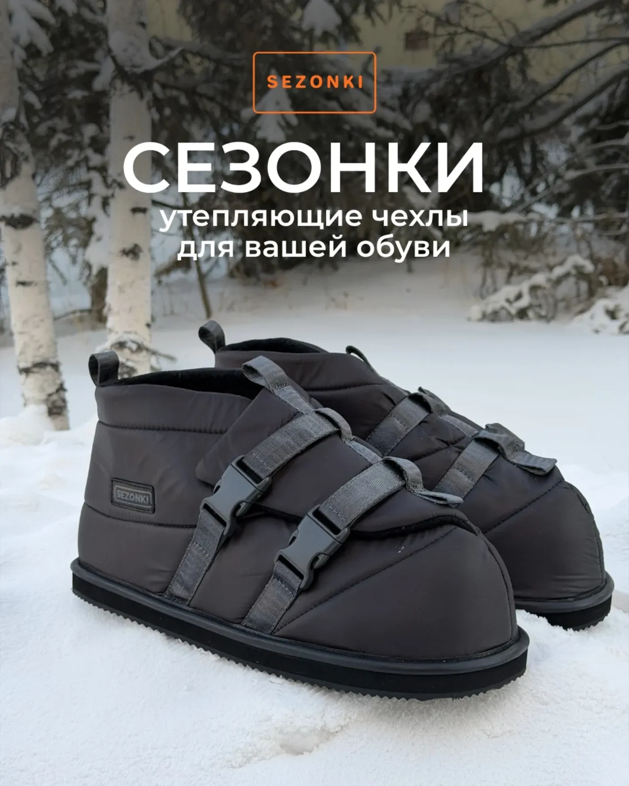
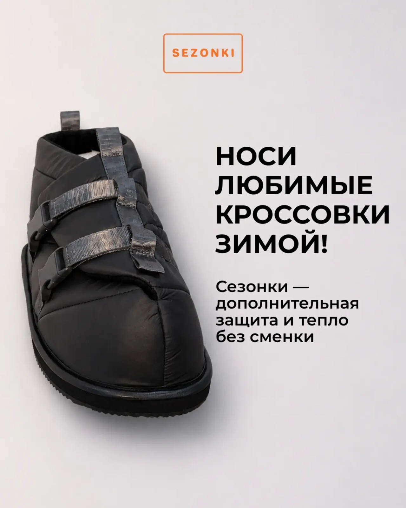
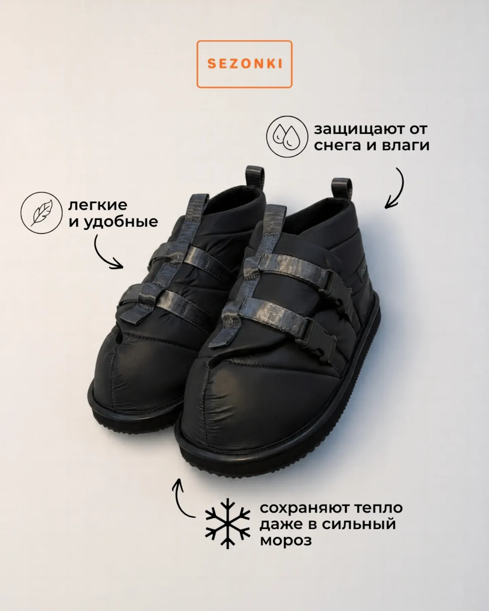

ДЛЯ УЧЁБЫ И РАБОТЫ
По пути — дополнительное тепло. В аудитории или офисе просто сними чехлы и оставайся в своей обуви.
Утеплённые чехлы надеваются прямо поверх обуви. На улице — защита от холода и снега, в помещении — твои привычные кроссовки.
SEZONKI придумали для простой идеи: зимой не выбирать между теплом на улице и любимыми кроссовками в помещении.

По пути — дополнительное тепло. В аудитории или офисе просто сними чехлы и оставайся в своей обуви.
Дом, машина, встречи и магазин — когда в течение дня постоянно переходишь из холода в тепло.
Не хочется расставаться с кроссовками до весны? Надень сезонки поверх и носи привычную обувь в зимнем городе.
SEZONKI — утеплённые чехлы, которые надеваются прямо поверх кроссовок. На улице — дополнительное тепло и защита, в помещении — привычная обувь.
Дополнительный слой помогает защитить обувь от холода, ветра и снега.
Зашли в помещение? Расстегните ремешки и оставайтесь в своих кроссовках.

Никакой сложной шнуровки. Надевай поверх привычной обуви и отправляйся по делам.
Надень SEZONKI прямо поверх своих кроссовок — менять привычную пару не придётся.
01 / 03Утеплённые чехлы поверх обуви для города и долгой зимы. Лёгкие, удобные, с регулируемыми ремешками.
Доставка по городу Якутску. Размер и наличие уточним при заказе.
Дом, работа, встречи и прогулки. SEZONKI созданы для городской зимы, в которой приходится часто переходить с мороза в тепло.
Смотреть в действии ↓
ЗИМА В ГОРОДЕПримерка, история создания и SEZONKI в деле. Нажмите на видео — оно откроется на весь экран.

ИДЕЯ → ПРОДУКТДесять лет назад появилась идея сделать зиму удобнее. Сегодня SEZONKI — реальный продукт, созданный для тех, кто хочет носить любимые кроссовки круглый год.
Создатель Konev Julustan рассказывает об идее, первых прототипах и пути к готовой паре.
А любимая пара — одна. Переключай ситуации и узнай, как сезонки вписываются в твой день.
Вышли на мороз — надели SEZONKI. В офисе сняли их и остались в привычных кроссовках.
Собрали главное о сезонках. Остальное с удовольствием расскажем в директе.
Задать свой вопрос →Это утеплённые защитные чехлы, которые надеваются поверх привычной обуви.
Напишите в директ свой размер и модель обуви. Команда поможет подобрать подходящую пару и уточнит наличие.
Наденьте сезонки поверх кроссовок и зафиксируйте ремешки. В помещении их можно быстро снять.
Стоимость пары — 8 500 ₽. Условия доставки уточняйте при заказе.
Да, доставка осуществляется по городу Якутску. Подробности согласовываются в директе.
Напиши нам в директ — поможем выбрать пару и расскажем о доставке по Якутску.
Написать в директ →